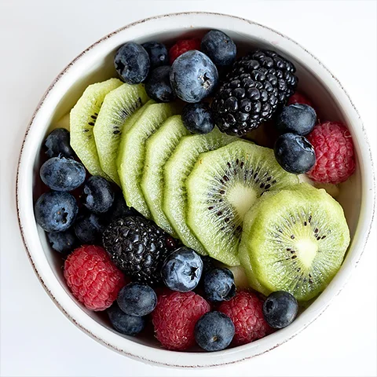
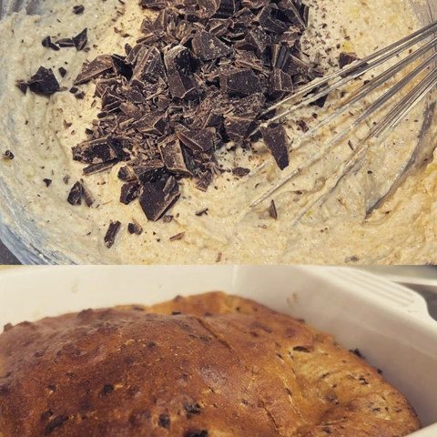
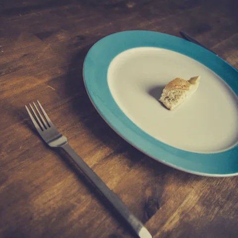
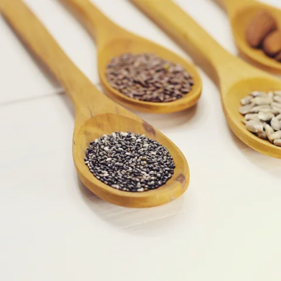
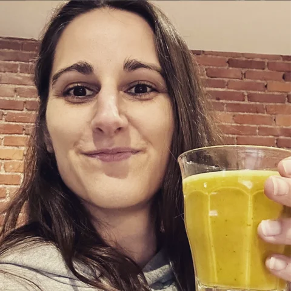
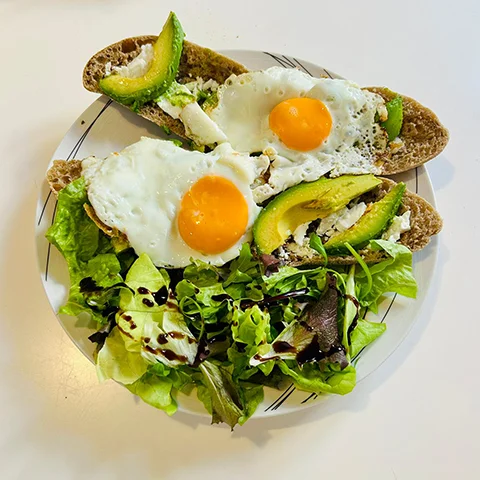

Articles alimentations

Des contenus accessibles pour comprendre, adapter et améliorer votre alimentation au quotidien. Pas de dogmes, mais une vision saine, durable et bienveillante. Vous y trouverez des astuces, des exemples de repas et des réponses aux questions les plus fréquentes.
Une pause gourmande et équilibrée

Parce que prendre soin de soi passe aussi par des choses simples du quotidien 💛 Voici une recette rapide, gourmande et équilibrée pour une...
Tu souhaites limiter le grignotage au quotidien ?
Le problème ne vient pas toujours d’un manque de volonté. Très souvent, il est lié à l’équilibre alimentaire. Une alimentation insuffisamment riche...
Arrête
de compter
les calories
Compter les calories peut sembler être une bonne idée… Mais dans la réalité, ça mène souvent à : ❌ frustration ❌ privation ❌ perte de liberté...
Tu veux aller mieux ? Commence
par ça
On cherche souvent compliqué… 👉 compléments 👉 programmes 👉 solutions rapides Alors que parfois, la base est là...
Le nutriment que la plupart des femmes oublient…
Quand on parle d’alimentation, on
pense souvent :
👉 calories
👉 sucre
👉 gras
Mais on oublie très souvent...
Les glucides
ne sont PAS
tes ennemis
Pendant longtemps, on t’a fait croire
que pour perdre du poids, il fallait
supprimer les glucides…
❌ Pain
❌ Pâtes
❌ Riz...
Tu veux
moins grignoter ?
Lis ça
On réduit souvent les fringales à un manque de volonté. Mais dans la majorité des cas, ce n’est pas une question de discipline...
Et si tu arrêtais de vouloir “maigrir”… pour enfin...
L’inflammation ne vient pas que du mouvement. 👉 Elle vient aussi de ton assiette. Certains aliments : ✨ apaisent ton corps...
Pourquoi je prends du poids alors que je ne mange presque...

C’est une phrase que j’entends très
souvent.
En réalité, manger trop peu peut
ralentir ton métabolisme...
Les 3 erreurs alimentaires qui entretiennent les...
Quand on veut perdre du poids avec
des douleurs articulaires, certaines
erreurs sont fréquentes :
1️⃣ Manger trop peu...
Les graines (courge, lin, chia) : petites graines, grands...

Elles sont petites.
Discrètes.
Et pourtant, elles font une vraie
différence au quotidien...
En ce dimanche pluvieux, je me réchauffe avec...

Recette :
• 250 ml de lait végétal non sucré
• 1 c. à café de curcuma
• 1 c. à café de cannelle...
Les œufs : nourrir ton corps pour qu’il coopère
Les œufs sont souvent l’un des
aliments les plus simples…
et pourtant parmi les plus intéressants.
Ils apportent...
Un geste simple, souvent
oublié…
Fatigue. Raideur. Envies alimentaires incontrôlées. Et parfois… 👉 ce n’est pas de la faim 👉 ce n’est pas un manque de motivation 👉 c’est...
L’avocat : précieux pour ton corps et tes articulations

L’avocat a longtemps eu mauvaise réputation. Trop gras. Trop calorique. À éviter quand on veut perdre du poids… 👉 Et pourtant, c’est...
L’avocat :
un allié santé
au quotidien

L’avocat est un aliment aux nombreux bienfaits, souvent apprécié pour sa texture fondante et son goût délicat. Riche en bons nutriments, il trouve...
Fêtes de fin d’année : se faire plaisir sans culpabilité

Les fêtes de fin d’année sont souvent synonymes de repas copieux, de chocolats et de desserts… mais aussi de culpabilité alimentaire. En tant...
Pourquoi adopter une alimentation saine et équilibrée

Manger équilibré, ce n’est pas seulement contrôler son poids : c’est nourrir son corps et son esprit pour se sentir mieux au quotidien...